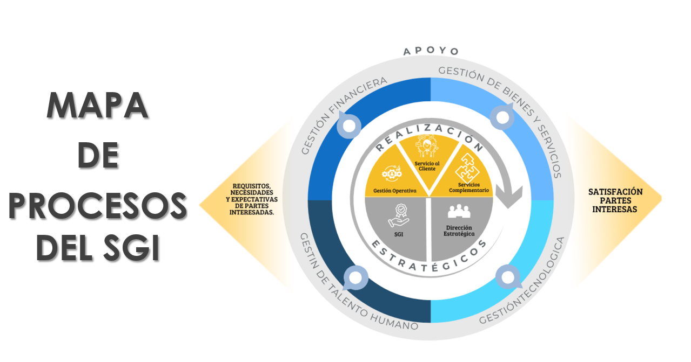

Políticas Institucionales
Descarga y lee detenidamente cada una de las políticas institucionales de la empresa:
Objetivos del Sistema de Gestión Integral (SGI)
- Propender por la generación de rentabilidad económica.
- Mejorar continuamente el SGI.
- Lograr la satisfacción del cliente.
- Garantizar el cumplimiento de los requisitos legales aplicables.
- Prevenir y minimizar la contaminación ambiental.
- Prevenir accidentes de trabajo y enfermedades laborales.
- Promover la participación de los trabajadores en la mejora del SGI.
Mapa de Procesos
Consulta el mapa de procesos institucional, donde se representa gráficamente la estructura y funcionamiento del Sistema de Gestión Integral:

Certificaciones
- ISO 9001:2015 - Sistema de Gestión de Calidad.
- ISO 14001:2015 - Sistema de Gestión Ambiental.
- ISO 45001:2018 - Seguridad y Salud en el Trabajo.